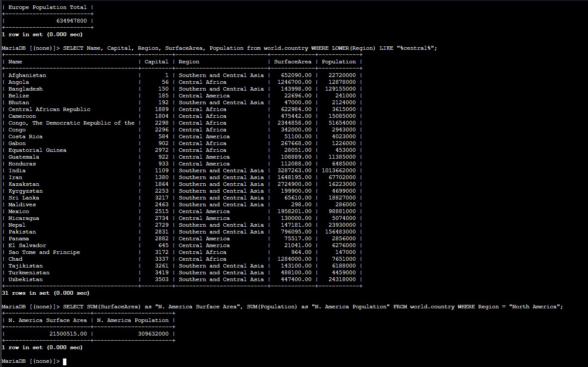

Range Queries
Used both explicit comparison operators and BETWEEN to return countries within the same population interval.
This lab extends the earlier SELECT exercises by introducing inclusive ranges, the BETWEEN operator, pattern matching with LIKE, totals with SUM, column aliases, and case handling with LOWER in the WHERE clause.
Connected to the Command Host, queried the world.country table with numeric ranges, rewrote the same range using BETWEEN, calculated Europe totals with SUM, added a readable alias, used LOWER for text matching, and solved the challenge by returning North America surface area and population totals.
Used both explicit comparison operators and BETWEEN to return countries within the same population interval.
Calculated totals with SUM and assigned readable column names with AS.
Used LOWER and LIKE to search text more safely, then solved the final aggregation challenge.
This lab built on previous SELECT practice and showed how functions and clearer syntax make analytical queries easier to read.
mysql -u root --password='re:St@rt!9'.world database existed with SHOW DATABASES;.country table to understand the available columns before narrowing the result set.SELECT sum(Population) ... WHERE Region LIKE "%Europe%"; and then repeated it with the alias AS "Europe Population Total" so the output label was easier to read.LOWER(Region) LIKE "%central%" to return rows that contain central in the region name without depending on the original case.SELECT SUM(SurfaceArea) AS "N. America Surface Area", SUM(Population) AS "N. America Population" FROM world.country WHERE Region = "North America";.
LOWER(...) search, and the final challenge query aggregating North America surface area and population.Functions and operators that made the later SELECT statements more expressive.
Population BETWEEN 50000000 AND 100000000Returns an inclusive numeric range using a more readable operator.
Region LIKE "%Europe%"Matches region names containing the word Europe with wildcard characters.
SUM(Population)Calculates a total instead of returning individual row values.
AS "Europe Population Total"Assigns a readable alias to the aggregated result column.
LOWER(Region) LIKE "%central%"Normalizes text to lowercase before matching the pattern.
SUM(SurfaceArea), SUM(Population) WHERE Region = "North America"Returns both challenge totals in one query.
SUM and LOWER make queries more useful for analysis and more robust for text comparisons.This lab showed that SQL becomes much more practical when the query language is used to express intent clearly. The same result can be reached in multiple ways, but some versions are easier to read and maintain.
The most valuable part was seeing how aggregation, pattern matching, and case normalization work together. Those features turn a basic SELECT into a more analytical query that answers broader questions about the dataset.